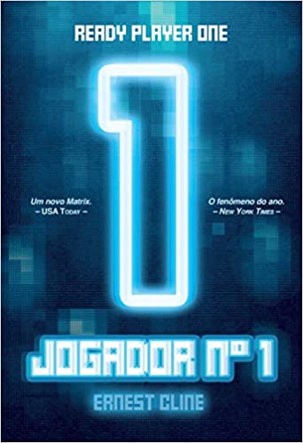
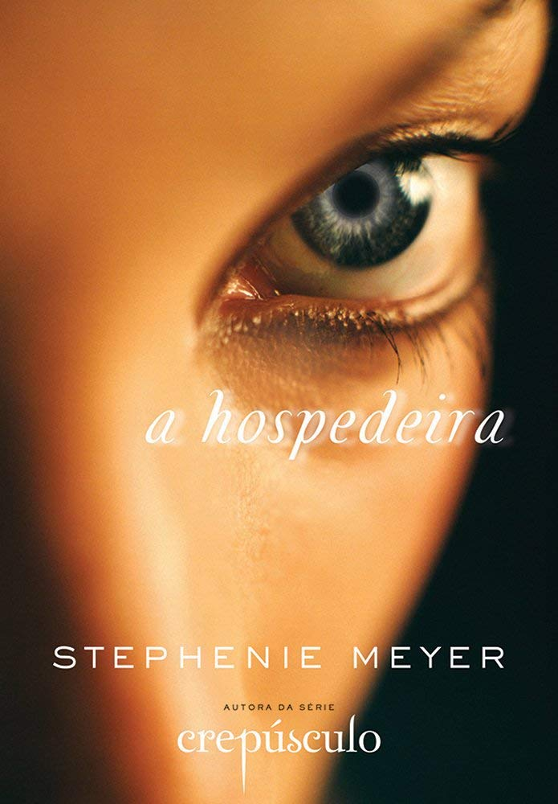

|  |
Jogador Nº 1
Autor: Ernest Cline
O ano é 2045 e a terra não é mais a mesma. fome, querras e desemprego empurraram a
humanidade para um estado de apatia nunca antes visto.
Wades Watts é mais um dos que escapam da desanimadora realidade passando horas e horas
conectado ao OASIS- uma utopia virtual global que permite aos usuarios ser o que quiserem;
um lugar onde se pode viver e se apaixonar em qualquer um dos mundos inspirados nos filmes,
videogames, e cultura pop dos anos 1980.
Mas a possibilidade de existir em outra realidade não é o unico atrativo do OASIS; o falecido
James Halliday, bilionario e criador do jogo, escondeu uma serie de Easter-Eggs em algum lugar
desse imenso mundo, e premiara aquele que conseguir desvenda-los com sua fortuna e poder.

|
 |
A Hospedeira
Autora: Stephenie Meyer
Quando um inimigo invisivel ameaça o Planeta, tomando o corpo dos seres humanos
e apagando suas memórias, Melanie Stryder arriscará tudo para proteger as pessoas que
mais ama- Jered, Lan, e seu irmão- e provar que o amor conquista tudo, mesmo em meio às
maiores adversidade.
"A hospedeira corresponde ás expectativas de sua fama: combina ficção cientifica e romance
de uma forma que nunca deu tão certo.

|
|
Feios
Autor: Scott Westerfeld
Tally está prestes a completar 16 anos e ela mal pode esperar. Não por sua carteira de motorista,
mas para se tornar bonita. No mundo de Tally, seu aniversário de 16 anos traz uma operação que
torna você de uma horripilante pessoa feia para uma maravilhosa pessoa linda e te leva para um
paraíso de alta tecnologia onde seu único trabalho é se divertir muito. Em apenas algumas semanas
Tally estará lá. Mas a nova amiga de Tally, Shay, não tem certeza se ela quer ser bonita.
Ela prefere arriscar sua vida do lado de fora.
Quando ela foge, Tally aprende sobre um lado
totalmente novo do mundo dos bonitos que não é tão bonito assim. As autoridades oferecem a
Tally sua pior escolha: encontrar sua amiga e a entregar, ou nunca se transformar em uma pessoa
bonita. A escolha de Tally faz sua vida mudar pra sempre.

|
|
Redoma
Autor:Meg Wolitzer
Se a vida fosse justa, Jam Gallahue estaria vivendo sua vida tranquila em Nova Jersey, assistindo
a séries de comédia e abraçando seu namorado, Reeve Maxfield.
Ela não estaria infeliz e sem vontade de se levantar da cama, nem estaria em um internato para
adolescentes “emocionalmente frágeis”, com uma colega de quarto
esquisita. Mas a vida não é justa, Jam perdeu seu primeiro amor e está completamente perdida.
|
 |
Admiravel mundo novo
Autor:Aldous Huxley
Uma sociedade inteiramente organizada segundo princípios científicos, na qual a mera menção das antiquadas
palavras "pai" e "mãe" produzem repugnância. Um mundo de pessoas programadas em laboratório, e adestradas
para cumprir seu apel numa sociedade de castas biologicamente definidas já no nascimento. Um mundo no qual
a literatura, a música e o cinema só têm a função de solidificar o espírito de conformismo.
|
|
Jogos das sombras
Autora:Christine Feehan
Um experimento secreto é criação do renomado cientista Peter Whitney e sua brilhante filha, Lily.
Criado para aprimorar as habilidades psíquicas de um esquadrão de elite, as transformações permitem
que o poder mental desses homens se transforme em uma incrível arma militar.
Entretanto, as cobaias
começam a morrer misteriosamente nos laboratórios secretos, sempre vítimas
de acidentes bizarros, e o capitão Ryland Miller sabe que ele será o próximo. Quando o dr. Whitney é
assassinado, Ryland sabe que agora só poderá confiar na bela Lily. Possuidora de um sexto sentido
excepcional, ela compartilha com Ryland cada novo medo, cada traição e cada suspeita que surge nos
laboratórios. Contudo, ambos compartilham muito mais do que os próprios medos e terão de lidar com
a paixão que os atrai enquanto desvendam os segredos por trás de tantas mortes.

|